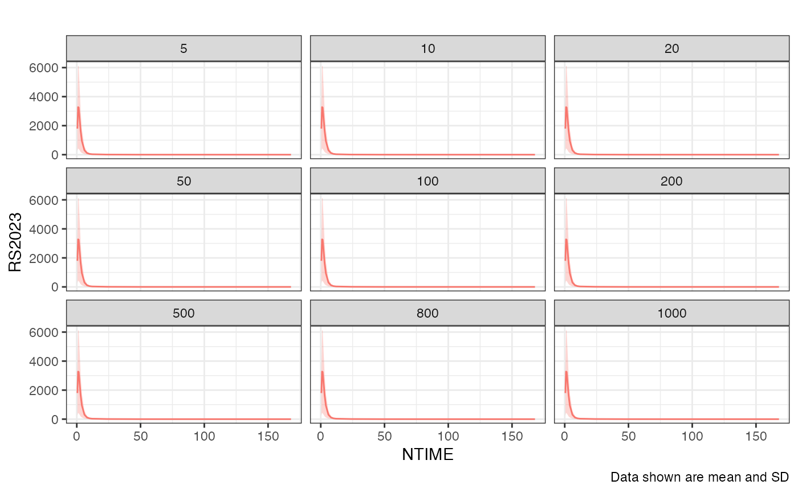
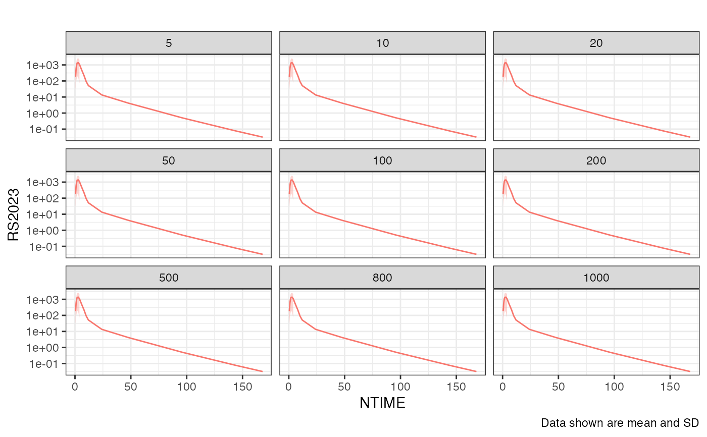
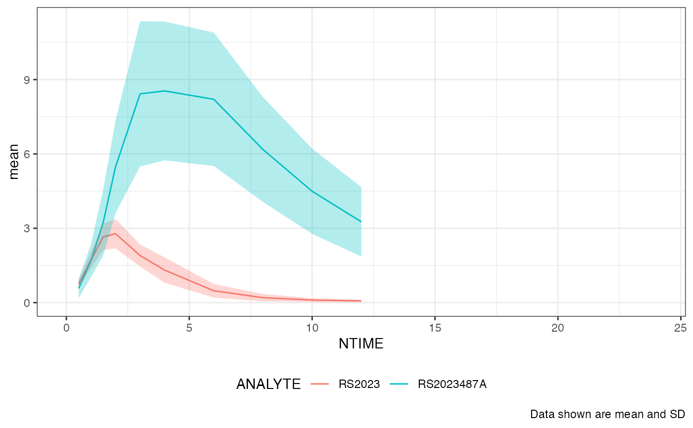
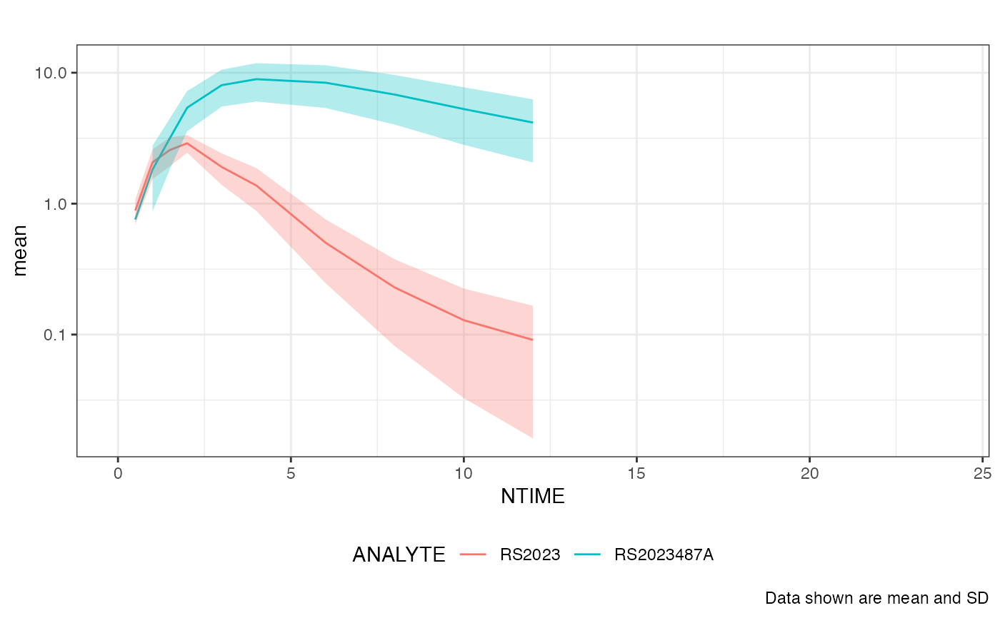
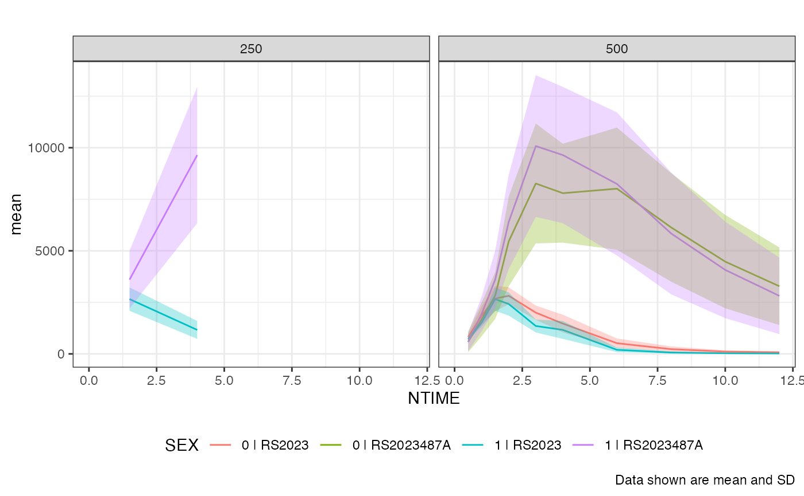
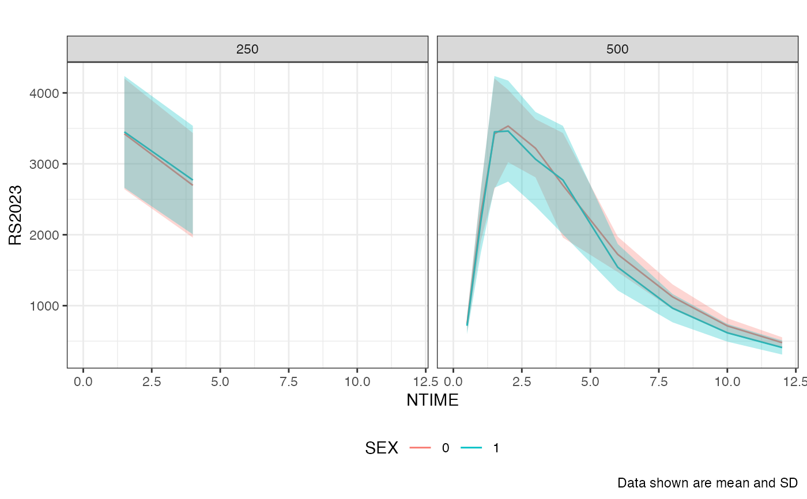

The averaging over subjects expects the NTIME field be in the data set.
Usage
nif_mean_plot(
obj,
analyte = NULL,
cmt = NULL,
dose = NULL,
group = "ANALYTE",
tad = FALSE,
cfb = FALSE,
summary_function = median,
points = FALSE,
point_size = 2,
alpha = 1,
lines = TRUE,
log = FALSE,
min_x = NULL,
max_x = NULL,
nominal_time = FALSE,
title = ""
)Arguments
- obj
The NIF object.
- analyte
The analyte as character. If NULL (default), all analytes will be plotted.
- cmt
The compartment to filter for as numeric.
- dose
The dose(s) to filter for as numeric.
- group
The grouping covariate, defaults to 'ANALYTE'.
- tad
Time after dose. Not used, only for compatibility.
- cfb
Y value is change from baseline, defaults to FALSE.
- summary_function
The summary function used for the definition of the baseline value, in case cfb = TRUE, see
add_cfb().- points
Boolean to indicate whether points should be drawn.
- point_size
the point size as numeric.
- alpha
The alpha value for the points as numeric.
- lines
Boolean to indicate whether lines should be drawn.
- log
Boolean to define whether y axis is plotted on the log scale.
- min_x
The minimal value for the x scale as numeric.
- max_x
The maximal value for the x scale as numeric.
- nominal_time
Nominal time. Always used, this switch only for compatibility.
- title
The plot title.
Examples
nif_mean_plot(examplinib_sad_nif)

nif_mean_plot(examplinib_sad_nif, log = TRUE)
#> Warning: NaNs produced
#> Warning: Transformation introduced infinite values in continuous y-axis

nif_mean_plot(examplinib_fe_nif, group = "FASTED", max_x = 12, points = TRUE)

nif_mean_plot(examplinib_poc_nif, dose = 500, max_x = 24, log = TRUE)

nif_mean_plot(examplinib_poc_nif, max_x = 12, group = "SEX")

nif_mean_plot(examplinib_poc_nif, max_x = 12, group = "SEX",
analyte = "RS2023")
